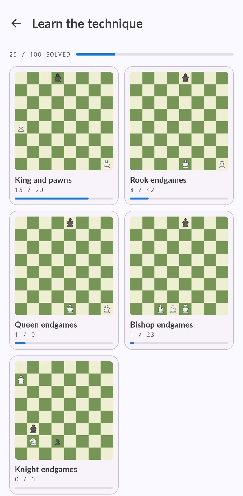

Essential chess endgames: the 100 to know, and a way to practise them
Knowing that the Lucena position wins and the Philidor position draws is one thing. Doing it against someone who defends perfectly is another. Here is the list, family by family, and the way Chess Coach lets you play every one of them against an engine that does not slip.

Where to start
Start with king and pawn endings. Every other endgame eventually turns into one, and the three ideas they teach decide most of them: the opposition, the rule of the square and the critical squares in front of a pawn.
Then go to rook endings. They are the ones you will meet most often in your own games, which is why they take 42 of the 100 places here: the Lucena and Philidor positions, cutting the king off, the short-side defence and the Vancura defence.
Bishop, queen and knight endings come last. Some you have to win; many are about knowing which positions are a draw and holding them.
The 100 endgames, by family
“Win” means you play for the full point. “Hold” means the position is a draw with correct defence, and the job is to prove it.
King and pawns 20
- Outside the squareWin
- Opposition and a winWin
- Zugzwang and a winWin
- King in front of the pawnWin
- Distant oppositionWin
- Inside the squareHold
- Opposition and a drawHold
- Zugzwang and a drawHold
- The rook pawn does not winHold
- Making a protected passerWin
- Doubled pawnsWin
- The critical squaresWin
- Giving up the passerWin
- TriangulationWin
- The outside passed pawnWin
- Reserve tempiWin
- Winning with the blocked pawnWin
- Passers on both wingsWin
- The wandering squareHold
- Holding with the blocked pawnHold
Rook endings 42
- Rook mateWin
- Ladder mateWin
- Lucena positionWin
- Freeing the king from a8Win
- The rook behind the pawnWin
- The rook hunts the pawnWin
- Rook against two connected pawnsWin
- Cutting along the rankWin
- The Philidor positionWin
- The king in front of the pawnWin
- The horizontal cutWin
- The king cut off on the eighthWin
- Bishop pawn on the fifthWin
- Gaining a tempo with checkWin
- The rook in front of the pawnWin
- The diagonal marchWin
- Winning a tempoWin
- Going roundWin
- The push from behindWin
- The limit positionWin
- Behind the leaderWin
- The knight pawn studyWin
- The king beside the pawnsWin
- Philidor positionHold
- Short-side defenseHold
- Vancura defenseHold
- King cut off by the rookHold
- The h4 pawn gives checkHold
- The Cochrane defenceHold
- The second-rank defenceHold
- Rook's pawn on the fifth against a bishopHold
- Doubled central pawnsHold
- Doubled knight pawnsHold
- The defensive systemHold
- Blocked connected pawnsHold
- Rook stuck in front of its pawnHold
- Vancura against two pawnsHold
- Back-rank defenceHold
- The vertical cutHold
- The imperfect cutHold
- One tempo shortHold
- The tail hookHold
Queen endings 9
- Queen mateWin
- Queen against a pawn on the seventhWin
- Rook pawn: the winning zoneWin
- Bishop pawn: the winning zoneWin
- Breaking the fortressWin
- Bishop pawn: queen and tradeHold
- Rook pawn: queen with checkHold
- The rook-and-pawn fortressHold
- The bishop pawn trapHold
Bishop endings 23
- Two bishops mateWin
- Bishop and knight mateWin
- Rook pawn, right bishopWin
- Driving the bishop off its diagonalsWin
- The short diagonalWin
- The knight's blockade breaksWin
- Connected pawns on the sixthWin
- The pawn cageWin
- The two-file methodWin
- The knight pawn held backWin
- The walk around the edgeWin
- Rook pawn, wrong bishopHold
- Opposition from behindHold
- A three-square diagonalHold
- Coming in on the long diagonalHold
- The bishop sacrificeHold
- The knight's blockade holdsHold
- The right defensive setupHold
- Pawns one file apartHold
- The fortress against the knight pawnHold
- Rook and central pawn: the narrow frontHold
- The knight pawn pushed too farHold
- Both pawns held on one diagonalHold
Knight endings 6
- The knight pawn gets throughWin
- King and knight can mateWin
- The knight in front of the pawnHold
- Controlling the pawn from the sideHold
- The knight's good circuitHold
- The knight's barrierHold
How to practise them in Chess Coach
- Pick an endgame.
- Read the goal and the technique.
- Play it against the engine at full strength.
- Choose guided or free.
- Then practise.

What is free
The king and pawn family is open to everyone: six endgames to learn the technique (the square, the opposition and zugzwang, each to win and to hold) and unlimited practice positions. The other families are part of Premium.